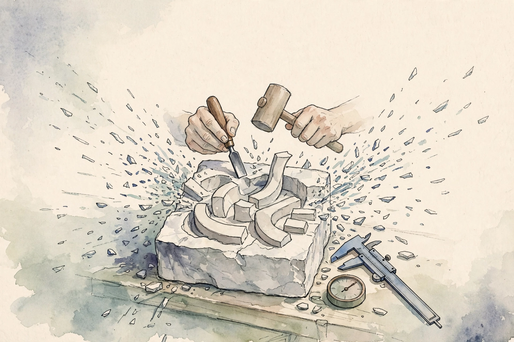
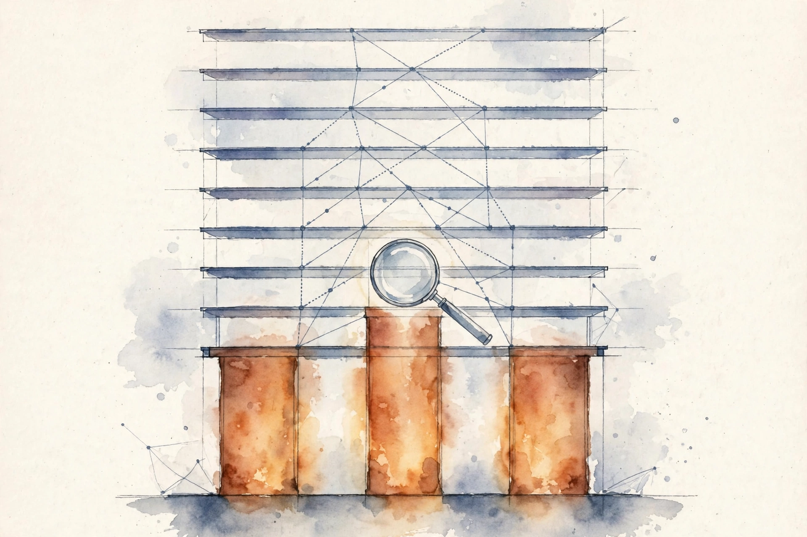

Unit 09 · Current trends, exams, and synthesis
Twelve concepts close the course: diffusion language models, the recap, midterm and final objective mapping, dated updates, original exam practice, cross-lecture dependencies, comparative architectures, the end-to-end toy, the research protocol, the production bridge, and the oral defense. Every number below comes from the lesson.
How to read this page. Three tags separate fact from invention.
From the lesson A claim, number, or figure that appears in the lesson source, with its section cited.
Illustration Invented by the companion: an analogy, a toy with values you supply, or a what-if. Never lesson content.
Companion Editorial framing or a transferable principle. The lesson did not say it this way.

From the lessonC01 items 2-6
Must text be written left to right? The toy: length-8 sequence, mask 4 positions. Step 1: the model predicts all 4 masked tokens at once. Step 2: re-mask the 2 least confident, predict again. Done in 2 parallel steps, not 8 serial ones. Autoregressive generation types out text. Diffusion generation sculpts it: start with a block of marble (masks), chip away everywhere, refine the rough spots. Parallel chips, serial polish. Training: mask a random fraction of tokens, predict them from the rest, cross-entropy on masked positions only. Inference: start fully masked, unmask the most confident subset per step.
From the lessonC01 items 6, 11
The computed example: 8 tokens with confidences [0.9, 0.85, 0.8, 0.7, 0.6, 0.5, 0.4, 0.3]. Step 1 unmasks the top 4. Step 2 unmasks 2 more, 2 stay masked. Two parallel steps cover 6 of 8 tokens vs 8 serial steps. Figure u09_fig01. The check: with steps = n and k = 1, the process reduces to a valid order-free generation. The win is latency with parallel hardware, not total FLOPs. The broken assumption: refinement repairs incoherence. Early wrong unmaskings lock in and poison later steps. Confidence calibration is the guard. The lab asks: 8 tokens, 2 steps. Four unmasked per step.
From the lessonC02 items 2-6
Nine lectures, what actually matters? The toy: L1 attention, L2 RoPE, L3 SFT+LoRA, L4 GRPO, L5 KV cache, L6 ReAct, L7 judge bias. Seven mechanisms, each with one sentence and one failure. The recap is a map, not the territory. Each pin marks a mechanism worth re-deriving from scratch. If you cannot re-derive it, the pin is a wish. The protocol: for each lecture, write the one equation you would reconstruct first and the one assumption that breaks it.
From the lessonC02 items 6, 8, 11
The computed example: the recap table itself, 7 rows, each verified against its unit lesson. The check: 21/21 on the checklist before the final. Below 15, revisit the weak lectures. The broken assumption: the bullets match the lectures. A guest lecture can replace a topic. Verify against artifacts when they publish. The lab asks: 15/21. Revisit.
| Lecture | Mechanism |
|---|---|
| L1 | Attention |
| L2 | RoPE |
| L3 | SFT + LoRA |
| L4 | GRPO |
| L5 | KV cache |
| L6 | ReAct |
| L7 | Judge bias |
From the lessonC03 items 1-6
Is every testable objective taught somewhere? The toy: objective "derive the DPO loss" maps to U05 C09 (taught, assessed). Objective "implement FlashAttention" is named in L5, taught nowhere yet. The map exposes the hole. The map is an inventory audit. Every objective needs a shelf (lesson) and a price tag (assessment). Unshelved objectives are promises, not coverage. Honesty note: the midterm (Oct 23, 2026) fell after the build baseline (2026-10-06). No exam content exists or is claimed here. The map works from syllabus bullets only.
From the lessonC03 items 6, 11
The computed example: 24 objectives from L1-L4 bullets, 21 mapped, 3 orphans (FlashAttention internals, speculative decoding details, on-policy distillation variants). Coverage 87.5%. Figure u09_fig02. The check: every non-orphan objective resolves to a real file and line. Dangling pointers are lies. The broken assumption: bullets equal exam scope. The midterm can test a guest topic. The map is a guide, not a contract. The lab asks: 24 objectives, 3 orphans. Coverage 87.5%.
From the lessonC03 items 4, 7 Coverage bench: the lesson's map arithmetic.
Reproduce the lesson: 21 mapped, 3 orphans, coverage 87.5%. Try the final map: 34 mapped, 6 orphans.
From the lessonC04 items 1-6
The final is cumulative. Where do lectures connect? The toy: DPO (L4) needs the BT model (U05), which needs MLE (P07), which needs probability (P06). The chain is the study order. The final tests the graph, not the nodes. Edges between lectures are where the hard questions live. The computed example: 40 objectives, 34 mapped, 6 orphans. Densest edges: U05 to U06 (RL foundations), U07 to U08 (agent eval). Study time follows edge density. Honesty note: the final (Dec 9, 2026) fell after the baseline. No exam content is claimed.
From the lessonC04 items 8, 11
The check: no objective lists a prerequisite that is itself an orphan. Chains must ground out in taught material. The broken assumption: edges are known. The final can emphasize L8-L9, which have the thinnest artifact base. Weight recent lectures up. The lab asks: the densest edge is U05 to U06.
From the lessonC05 items 2-6
A new paper lands in November. Does the course absorb it silently? The toy: baseline note "GRPO as of Oct 2026", update note "Nov 2026: follow-up X, changes claim Y". Two dates, no confusion. The course is a newspaper with an archive. New editions do not rewrite old ones, they stack with dates. The protocol: every factual claim carries "as of" or a dated source. Updates append, never edit history. This unit: baseline 2026-10-06, L8/L9 in the future at baseline, exams unheld. Any claim about L8 content is dated speculation, labeled.
From the lessonC05 item 11
The broken assumption: readers check dates. A stale claim quoted without its date misleads. Put dates inline, not in footnotes. The check: no undated factual claim in new material. Stamping is free. Undated claims cost trust.
From the lessonC06 items 2-6
How do you practice for an exam you cannot see? The toy questions: compute the GRPO advantage for rewards [2, 0, 0, 0] (2 min), state two judge biases and their fixes (3 min). Same skills, new numbers. Practice spars, the exam is the fight. Sparring partners are not the opponent, but the muscles are the same. The computed example: five questions with times: group norm (3 min), pass@k (2 min), fusion (3 min), ECE (3 min), bias swap (2 min). Total 13 min. Build questions from the objective map: one per major mechanism, mixed difficulty, timed. Grade against the unit keys.
From the lessonC06 items 8, 11
The check: every question traces to an objective and a key. Orphan questions are cut. The broken assumption: the format guess is right. The exam can be all proofs. Practice derivations too, not just numbers. The lab asks: build one 3-minute question.
From the lessonC06 items 2, 6 Sparring bench: the lesson's timed set, solved.
Reproduce the lesson's first toy question: rewards [2, 0, 0, 0] give advantages [1.73, -0.58, -0.58, -0.58]. Try your own group.
From the lessonC07 items 2-6
Which concept, removed, collapses the most later material? The toy: remove "attention", U02-U09 lose their footing. Remove "RLVR", only U06 wobbles. Attention is the keystone. The course is a building. Lower floors hold upper floors. Count downstream dependents per concept. The top three are the keystones. Study them first, test them hardest. The computed example: toy graph of 20 concepts, attention has 15 downstream, policy gradient 9, retrieval 7. The ranking is the study order. Figure u09_fig04 marks the keystones on the dependency map.
From the lessonC07 items 8, 11
The check: the top keystone is a U01-U02 concept. If a U08 concept tops the list, the edges are wrong. The broken assumption: edges are complete. A hidden dependency (judging needs calibration) misleads the ranking. Audit edges yearly. The lab asks: the keystone of the toy graph is attention.

From the lessonC08 items 2-6
A new project, which architecture? The toy axes: coherence (AR wins), latency with parallel hardware (diffusion wins), tooling maturity (AR wins). Score 2-1 for AR today. Architectures are vehicles. The sedan (AR) is refined and everywhere. The prototype (diffusion) is fast on the track, rough on the road. The decision matrix: rows architectures, columns axes, cells scored 1-3 with dates. The winner is the weighted sum, the dates are the honesty.
From the lessonC08 items 6, 11
The computed example: AR [3, 2, 3], diffusion [2, 3, 1], equal weights: AR 8, diffusion 6. Latency-heavy weights [0.2, 0.6, 0.2]: both 2.4, a tie. The check: the dates are present and the weights are stated. A matrix without dates is an opinion. The broken assumption: axes are complete. Inference cost per token can flip the ranking at scale. Add cost as an axis. The lab asks: equal weights, AR wins 8 to 6.
| Architecture | Coherence | Latency | Maturity | Equal-weight total |
|---|---|---|---|---|
| AR | 3 | 2 | 3 | 8 |
| Diffusion | 2 | 3 | 1 | 6 |
From the lessonC08 items 5, 7 Decision bench: the lesson's weighted matrix on your weights.
Reproduce the lesson: latency-heavy weights [0.2, 0.6, 0.2] give 2.4 vs 2.4, a tie. Try equal weights for AR 8 vs diffusion 6.
From the lessonC09 items 2-6
Do the pieces actually connect? The toy: vocab 4, d = 2, a two-token sequence, first token a, second b. Embed, one attention head, project to logits. Every number on the table. The toy is a dollhouse. Every room is real, just small. The six lines: e = E[x], q = e W_q, k = e W_k, v = e W_v, a = softmax(q k^T / sqrt(2)), h = a v, logits = h W_o. Each step is a matrix multiply. The computed example: with the fixed toy matrices, logits for position 2: [0.33, 0.67, -0.33, -0.67]. Argmax picks token 1, the b token. Figure u09_fig03.
From the lessonC09 items 8, 11
The check: rows of a sum to 1, logits shape (2, 4). If not, a transpose is wrong. O(n^2 d) with n = 2, d = 2: sixteen multiplies. The point is the path, not the speed. The broken assumption: the toy teaches scale. Nothing about KV caching or numerics appears at n = 2. The toy teaches connection, not systems. The lab asks: shape of a is (2, 2), argmax picks token 1.
From the lessonC09 items 4, 6 Argmax bench: the lesson's logits, your pick.
Reproduce the lesson: the defaults pick token 1.
From the lessonC10 items 2-6
What separates a real experiment from theater? The toy: hypothesis "group norm beats batch norm on mixed difficulty". Kill criterion: "if the delta is within 2 seed-std, kill it". The kill criterion is the honesty. Research is a bet with an exit. The hypothesis is the bet, the kill criteria are the stop-loss. No stop-loss, no trade. The checklist: question, falsifiable hypothesis, literature, data, baselines, matched budgets, metrics, controls, ablations, seeds, uncertainty, failure criteria, reproducibility, negative-result plan, limitations, ethics. Every item present or explicitly waived.
From the lessonC10 items 8, 11
The check: the kill criteria are numeric and pre-registered. Vague criteria fail the check. The broken assumption: the protocol guarantees truth. P-hacking inside the protocol is still p-hacking. Pre-register and keep hands off the analysis plan. The worked example is the capstone report on the GRPO extension, hypothesis through negative result, reported honestly. The lab asks: write a falsifiable hypothesis and its kill criterion.
From the lessonC11 items 2-6
The lab says 0.98, production says 0.81. What happened? The toy: lab data was clean, production is messy, latency caps k at 2, the verifier is weaker. The gates catch each gap. Production is the ocean, the lab is the pool. Gates are the airlocks: data, latency, verifier, cost, monitoring, rollback. Gates in order: (1) data match (production sample through the lab pipeline), (2) latency (p99 under budget), (3) cost (per-query under budget), (4) shadow (run alongside, compare), (5) rollback (one command, tested). Each gate is a measurement, not a meeting. Ship only on five passes.
From the lessonC11 items 8, 11
The check: the rollback was tested, not just written. An untested rollback is a wish. The broken assumption: the lab result is real. The lab metric can be gamed. Audit the lab before bridging it. The worked example is the applied RAG support capstone, with hypothetical cost numbers labeled as such. The lab asks: rollback untested, verdict: wish.
From the lessonC12 items 2-6
Can you explain it when the questions keep coming? The toy ladder on GRPO: define, toy, derive, implement, compare, debug, critique, design. Eight rungs, no hiding. The defense is a stress test. Each rung loads the concept harder. Passing means the knowledge is structural, not painted on. The defender may say "I do not know" once without failing. Twice is a crack. Ten ladders with full keys live in the interview folder, and this unit's defense draws from all nine units.
From the lessonC12 items 8, 11
The check: the defender derives, not recites. Recitation fails at rung 3. One defense is 20 minutes. Ten defenses are a course. The broken assumption: the ladder fits every concept. Pure-fact concepts have no rung 3. Adapt: rung 3 becomes "justify why this fact matters". The lab asks: the 8 rungs, in order.
Every lesson on this page, in order. Tap one to return to its chapter.